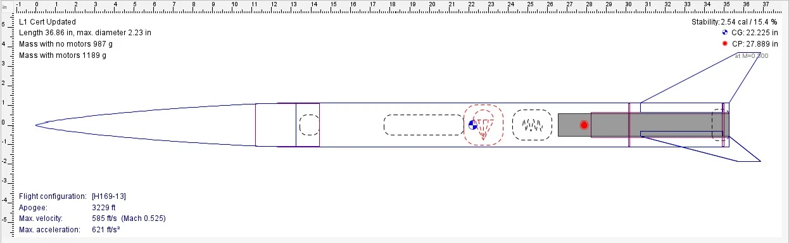
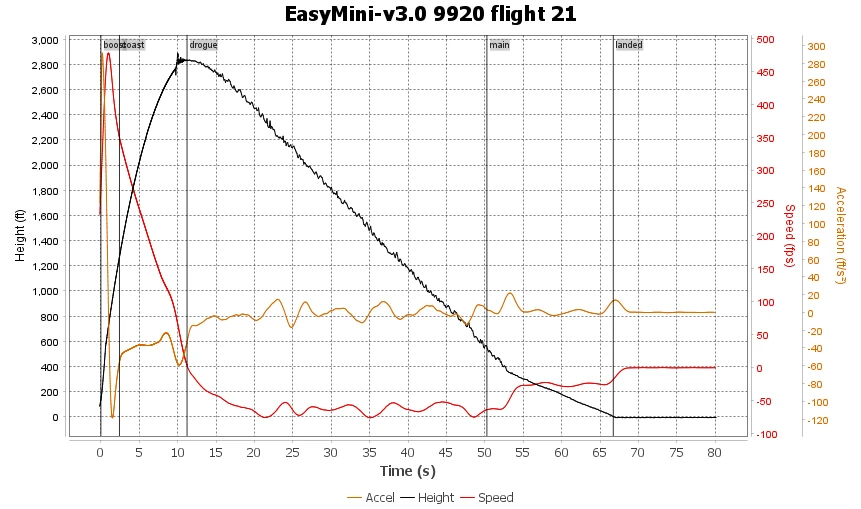

01Overview
A Level 1 certification from the National Association of Rocketry requires building a rocket, flying it on an H or I motor, and recovering it in a condition to fly again. I used the project to practice the full loop: simulate the design, build it, fly it, and compare the flight data against the prediction. I flew in June 2026 and completed the certification process in July.

02Design
I modeled the rocket in OpenRocket to check stability and predict the flight before building. The center of pressure sits about 2.5 body diameters behind the center of gravity, which is a comfortable stability margin.

- AirframeFiberglass nose cone and body tube, 2.23 in diameter, 36.9 in long
- FinsThree swept trapezoidal fins
- MotorAeroTech H182R, held by a motor retainer
- Recovery24 in ripstop nylon parachute on a Kevlar shock cord
- Mass987 g without the motor
- AltimeterEasyMini v3.0 as the backup flight recorder
03Flight data
The EasyMini altimeter recorded the whole flight. The motor burned for 2.4 seconds, the rocket coasted for another 8.8 seconds to apogee, and it landed 66.7 seconds after launch.

Prediction against reality
My OpenRocket simulation for the H182R predicted the apogee to within about 1%. The measured top speed came in about 14% below the prediction.
04EOS flight computer
EOS is a flight data logger I wrote in CircuitPython for a Raspberry Pi Pico. It reads a BNO055 inertial sensor and a BMP3XX barometer and logs a row of data to a CSV file about six times a second.
- Calibration. On startup it averages 5 seconds of pressure readings to set ground level.
- Launch detection. It arms, then waits for acceleration above a threshold on five readings in a row before it starts logging. This avoids filling the log while the rocket sits on the pad.
- Altitude filter. A complementary filter blends altitude integrated from the accelerometer with barometric altitude, so the estimate responds quickly without the barometer's noise.
- Status LED. Slow blink means armed, ten quick flashes confirm launch, and fast blink means logging.
I ran five logging tests while tuning the launch trigger and the filter in the days leading up to the flight.
05What happened on launch day
EOS was working up until about 30 minutes before launch. Because its launch trigger is based on acceleration, our club president recommended raising the threshold so that handling the rocket on the pad couldn't arm it early and start a false data capture. I made the change at the field.
EOS ended up recording no data from the flight. The EasyMini I flew as a backup worked, and every number on this page comes from it.
06Code
This is the version from my bench tests, before the launch-day threshold change.
07Takeaways
- Always fly a backup. The commercial altimeter is the only reason I have flight data.
- Re-test after every change. A change made at the field, with no time for another test, is a risk even when the reasoning behind it is sound.
- The simulation was trustworthy. OpenRocket predicted the apogee to within about 1%, which gives me confidence using it for my Level 2 design.
- Next for EOS: a launch trigger that also uses barometric altitude, so it doesn't depend on a single acceleration threshold.